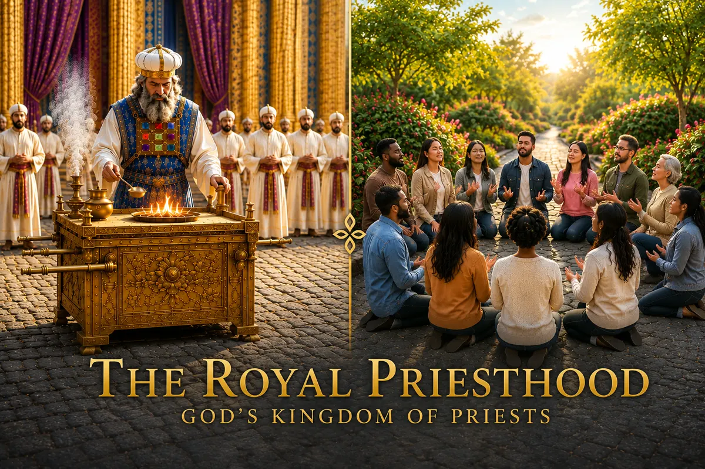

Companion Teaching • Go Deeper Podcast
The Royal Priesthood
God’s Kingdom of Priests

Listen to the Go Deeper Podcast
Continue “The Royal Priesthood” as we explore how Christ fulfilled the Old Testament priesthood and what it means for every believer to live faithfully as part of God’s royal priesthood today.
This episode is connected to its Read-Along message while remaining available as a separate companion teaching.